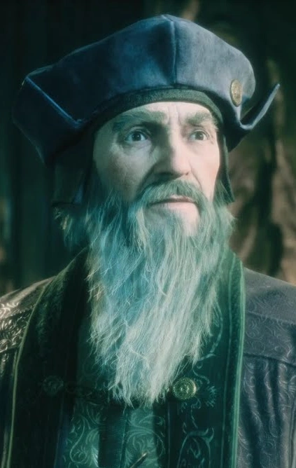
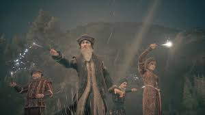

Biographie
Percival Rackham est un personnage mystérieux connu pour son rôle dans les aventures magiques. Ancien professeur de magie, il a marqué l'histoire par son ingéniosité et son approche singulière des sortilèges oubliés.
Galerie
 Une citation mémorable
"La véritable magie réside non dans les sorts, mais dans les intentions derrière leur utilisation."
Un secret révélé
Peu de gens le savent, mais Percival Rackham possédait un grimoire capable de révéler les pensées les plus profondes de quiconque le touchait.